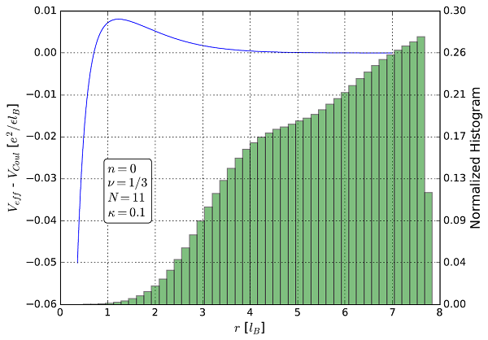
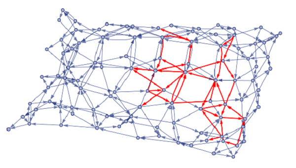
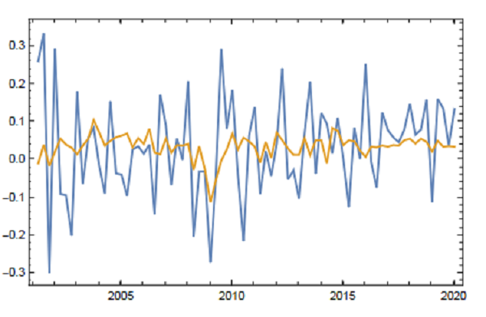
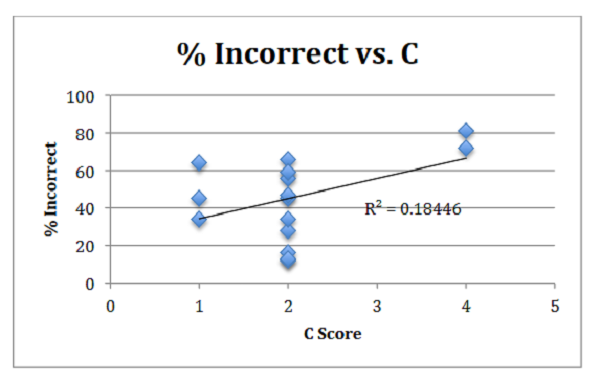

Paul Fischer
Software Engineer
guest@guest:/$ ls
about contact education experience projects
guest@guest:/$ cd about
guest@guest:/about$ cat about.txt
Hi! I'm Paul. I love to code everything from websites to computational physics simulations, financial data science, embedded systems in arduino, and more!
After graduating with a B.S. in Physics with a minor in Applied Mathematics, I taught high school Physics and AP Physics. I enjoyed sharing my knowledge but wanted to return to do more research. During my M.S. in Computational Physics, I really developed my love of coding. My research involved working with Markov chain Monte Carlo simulations in the C programming language distributed among several nodes of a High Performance Cluster (HPC) in parallel via Open MPI on Red Hat Enterprise Linux. The analysis of my data was done in Python and utilized the libraries pandas, NumPy, SciPy, SymPy, and Matplotlib. My love f coding for my research drew me to my current career goals in software engineering.
guest@guest:/about$ cd /projects
guest@guest:/projects$ cat projects.txt
Featured Projects and Publications
View selected projects and publications below.
Realistic Fractional Quantum Hall Energy Gaps in Graphene via Monte Carlo Simulations
MS thesis(California State University, Long Beach). Developed a scheme for incorporating Landau level mixing into parallelized simulations of fractional quantum Hall effect states of graphene run in theHigh Performance Computing (HPC) Lab. Technical Skills: C, MPI, Python, Pandas, Matplotlib, NumPy, SciPy, SymPy, Jupyter Notebook, LaTeX, Visual Studio Code, Makefile, Linux Command Line, Probability/Statistics.
Rules generating elementary particle behavior in the Wolfram Model
Wolfram Physics Project Winter School 2021. Built a framework for discovering the rules which induce particle-like motion in topological defects on a hypergraph. Featured Contributor Badge.
View project / case studyUsing Dodd-Frank Act Stress Test data to predict percentage growth ofMicrosoft Corporation stock price through 2023 Q1
Wolfram Data Science Bootcamp 2020 (Wolfram Certified Level II in Multiparadigm Data Science). Created a model for theperformance of Microsoft stock price during the pandemic of COVID-19 according tostress test dataprovided by the Federal Reserve for severely adverse conditions. Technical Skills: Wolfram Mathematica,Data Visualization,Data Cleaning, Data Manipulation.
View project / case studyAn Objective Rating Scale for the Difficulty of Introductory Mechanics Problems
BS thesis (Loyola Marymount University, 2016). Honed a framework for identifying the cognitive load required to solve mechanics problems and designed an experiment to measure student homework scores as a function of cognitive load.
View project / case studyguest@guest:/projects$ cd /education
guest@guest:/education$ cat education.txt
Education
California StateUniversity - Long Beach, CA
Master of Science in Physics, Computational Physics Option, August 2019 –Expected: August 2022
Relevant Coursework: Advanced Computation (Plot2, Fortran), Computer Interfacing Exp Phys (LabVIEW, Arduino). Awards/Honors: Google Summer Research Assistantship.
Loyola Marymount University - Los Angeles, CA
Bachelor of Science in Physics, Minor in Applied Mathematics, August 2012 –August 2016
Relevant Coursework: Algorithms and Applications (MATLAB). Awards/Honors: LMU Achievement Award, Physics Honor Society Sigma Pi Sigma, Dean’s List.
guest@guest:/education$ cd /experience
guest@guest:/experience$ cat experience.txt
Work Experience
Graduate Assistant(PHYS 510/562)/Teaching Associate (PHYS 100A/151)
California State University, Long Beach
August 2019 -Present
Taught statistical methods for analyzing and inferring conclusions fromexperimental physics data gathered in Microsoft Excel andcomputational experiments simulated in VPython. Measured student performance viagrades and providedtimely, constructivefeedback. Encouragedequalcollaboration and effective communication among students working in groups.
Physics/AP Physics Teacher
Saint Monica Catholic High School
August2016 –June 2019
Developed and managedstudent laboratory projects analyzingrecorded datain Excelagainst predictive models, occasionallyinvolving real data sets from NASA. Attended monthly professional development events (such as College Board Workshops, the CA STEAM Symposium, and AAPT meetings) to better develop the skill ofeffectively communicatingtechnical ideasto a non-technical audience. Helped design the new makerspace, including strategies to encourage participation from underrepresented groups in science.